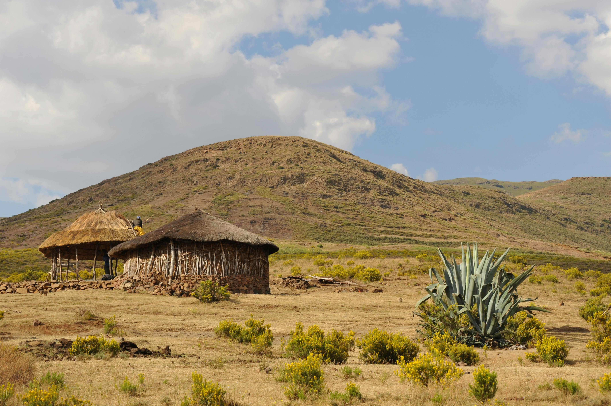
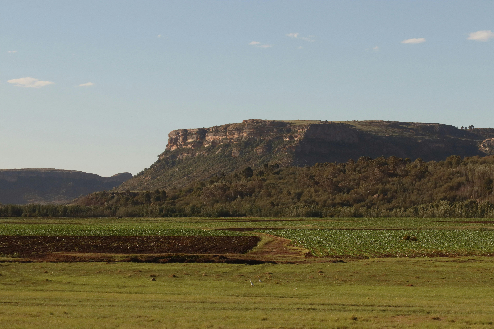

On our South African adventure, one of the most unforgettable parts of the journey was crossing through Lesotho. Nothing had prepared us for how completely different it would feel from everything else. As we crossed the border, the roads twisted higher and higher into the mountains, the air turned cooler and sharper, and the world outside the window became something else entirely. Basotho shepherds on horseback, wrapped in their traditional patterned blankets, moved across mountain slopes as if the 21st century had simply not arrived yet. Tiny villages clung to hillsides in the clouds. Children waved as we passed. And a silence settled over everything that stayed with us long after we had crossed back out.


Up until the Lesotho crossing, our South African adventure had already been extraordinary — the coastline, the wildlife, the vast open roads and the sheer scale of the country. But Lesotho stopped us in a way that nothing else had. The border crossing felt like passing through a membrane between two completely different worlds.
The roads began twisting higher into the mountains almost immediately. Dramatic drops opened on one side, with valleys stretching endlessly below. The air changed — cooler, sharper, cleaner — and with it came a quiet that was completely unlike the busy roads of South Africa. Long stretches where there was absolutely nothing around except mountains, sky and open land. The sense of remoteness was immediate and complete.
And then the villages appeared. Tiny clusters of rondavels — traditional round stone houses with thatched roofs — clinging to hillsides at altitudes that seemed impossible for habitation. Smoke rising from chimneys. Children running to the roadside to wave as we passed. Roadside stalls selling handmade crafts and the distinctive woven hats of the Basotho people. And always, in the distance, more mountains.
Lesotho is known as the Kingdom in the Sky for good reason — it is the only country on earth where every single point of its territory sits above 1,000 metres. The entire country is mountain. Standing there, looking at it, that fact becomes something more than a geographical statistic. It becomes a way of understanding why Lesotho has kept its own culture, its own pace and its own character so completely intact.
Nothing had prepared us for the Basotho horsemen. Not anything we had read, not anything we had seen in photographs. Seeing them in person — riding through the mountains on sturdy Basotho ponies, wrapped in their traditional blankets as they had been for generations — was one of those travel moments that transcends the trip itself and becomes something you carry with you permanently.
The Basotho blanket is not a tourist prop or a cultural performance for visitors. It is a living tradition — the everyday clothing of the mountain Basotho people, worn for warmth, for ceremony and for identity. Every pattern carries meaning. Elders wear them to church. Shepherds wear them on the slopes. Children wear them to school. The blanket is, in a very real sense, what connects contemporary Lesotho to everything that came before it.
Horses in Lesotho are not tourist attractions either. They are transport — practical, everyday and indispensable in mountain terrain that no road reaches and no vehicle can navigate. The Basotho pony is a distinct breed, small and extraordinarily sure-footed on mountain paths, developed over centuries for precisely this landscape. Watching a shepherd navigate a steep hillside on horseback with complete ease and confidence was a reminder that some technologies have not been improved upon.
The mountain roads of Lesotho are an experience in themselves — winding, dramatic and at times vertiginous, cutting through a landscape of extraordinary scale and beauty. Around every corner, another view that seems impossibly vast. Dramatic drops where the road falls away into valleys so deep you cannot see the bottom. Panoramas that stretch to horizons so distant they seem to curve with the earth.
The Sani Pass — on the KwaZulu-Natal/Lesotho border — is the most famous of Lesotho's mountain routes and one of the most dramatic roads in Africa. A steep gravel track that climbs over 1,300 metres in just 9 kilometres, requiring a 4x4 vehicle and rewarding with views that justify every hairpin bend. At the top of the pass, the Sani Mountain Lodge claims the title of the highest pub in Africa — a claim that, after the drive up, feels entirely reasonable as a destination.
Even on the more accessible routes through Lesotho, the mountain driving is unlike anything in Western Europe. Long stretches of road where there are no other vehicles, no petrol stations, no signage — just the road, the mountains and the sky. The isolation is total and, once you settle into it, completely extraordinary.
Lesotho is one of the poorest countries in the world by standard economic measures — and the harshness of life in the remote mountain areas is visible. But those measures say nothing about what actually struck us most about the people of Lesotho, which was the dignity and warmth that came through even in the briefest encounter along a mountain road.
Children running to wave at passing vehicles. Women at roadside stalls with handmade crafts laid out with care and pride. Elders sitting outside rondavels in the afternoon sun, watching the mountains with the patience of people who have spent their whole lives in one of the most beautiful and most remote landscapes on earth. The Basotho people have survived everything their geography and their history has thrown at them — including being the only African kingdom never colonised by European powers — and that survival has produced a culture of remarkable resilience and remarkable warmth.
The contrast after leaving Lesotho was one of the most vivid geographical transitions of the entire trip. As we crossed back into South Africa and continued towards Eswatini, the towering mountains gave way to greener rolling hills and warmer subtropical scenery. The world opened up and the temperature rose. But Lesotho stayed with us — a place that had nothing to prove to anyone and everything to offer the traveller patient enough to find it.
Silhouetted against the mountain sky, wrapped in their traditional blankets, riding terrain that no road reaches. One of the most striking and most lasting travel images we have ever witnessed. It stays with you permanently.
Twisting higher and higher with dramatic drops and panoramic views around every bend. The scale of the Lesotho highlands is genuinely extraordinary — a landscape that makes you feel very small in the best possible way.
Tiny clusters of rondavels clinging to hillsides at impossible altitudes. Smoke from chimneys. Children waving from the roadside. Life being lived at its own pace in one of the most remote landscapes on earth.
Long stretches where there was absolutely nothing around except mountains, sky and open land. A silence so complete it felt almost physical. After the busy roads of South Africa, it was extraordinary.
Worn by shepherds, elders, children and everyone in between — the Basotho blanket is a living culture, not a tourist attraction. Seeing it as everyday clothing in the mountain villages gave it a completely different meaning.
Leaving Lesotho and re-entering South Africa felt like coming back from somewhere much further away. The mountains gave way to rolling hills, the temperature rose, the roads widened. But Lesotho stayed with us more than almost anywhere else on the trip.
Lesotho is most powerfully experienced as part of a broader Southern Africa journey — alongside South Africa, Eswatini and perhaps Zimbabwe or Botswana. The contrast between countries and landscapes is one of the great things about this part of the world, and TourRadar has brilliant Southern Africa itineraries that bring it all together.
Disclosure: This is an affiliate link. If you book through it we may earn a small commission at no extra cost to you.
Sani Pass 4x4 tours, Basotho pony trekking, cultural village visits, mountain hiking excursions and Lesotho day trips from South Africa — book in advance, especially the Sani Pass tours which are very popular.
Disclosure: If you book through this link we may earn a small commission at no extra cost to you.
If you are spending more than a transit day in Lesotho, Klook has accommodation options ranging from mountain lodges to cultural guesthouses — the best way to experience the highlands properly is to stay the night.
Disclosure: This is an affiliate link. If you book through it we may earn a small commission at no extra cost to you.
Common questions
What to pack for Lesotho
Lesotho means mountain altitudes, cold air even in summer and long distances between facilities. Pack practically and warmly.
Mobile coverage in Lesotho's remote mountain areas is limited — a worldwide SIM gives you the best chance of connectivity for navigation and safety.
View on Amazon →Lesotho's altitude means temperatures drop significantly — even in summer the mountain air is cool and the highlands can be very cold at night.
View on Amazon →For anyone venturing off the main roads — Lesotho's mountain terrain is rugged and proper footwear is essential for any walking.
View on Amazon →Power supply is unreliable in remote areas — a fully charged power bank is essential for navigation and capturing those mountain moments.
View on Amazon →Medical facilities in remote mountain areas of Lesotho are very limited — a well-stocked personal first aid kit is essential.
View on Amazon →Stay hydrated at altitude — a good reusable water bottle is essential for mountain driving and any hiking in Lesotho's highlands.
View on Amazon →Disclosure: These are Amazon affiliate links. If you buy through them we may earn a small commission at no extra cost to you.
Lesotho was one extraordinary chapter in a longer Southern Africa journey — read the rest of the story below.
Table Mountain, penguins at Boulders Beach, the Big Five in Kruger, the Panorama Route and Soweto — the trip that took us through Lesotho.
Read the South Africa guide →The kingdom that got deep under our skin — a primary school visit that was one of the most moving experiences of the entire journey.
Read the Eswatini guide →Five nights on safari, the Big Five ticked off, the Maasai Mara community and Rothschild's giraffes in Nairobi.
Read the Kenya guide →Include Lesotho. Not for the landmarks — there are none in the conventional sense. Include it for the mountain roads, the horsemen in blankets, the villages in the clouds and the feeling of having been somewhere completely, unforgettably real.
Affiliate disclosure: if you book through our links we may earn a small commission at no cost to you. We only recommend experiences we've done ourselves.